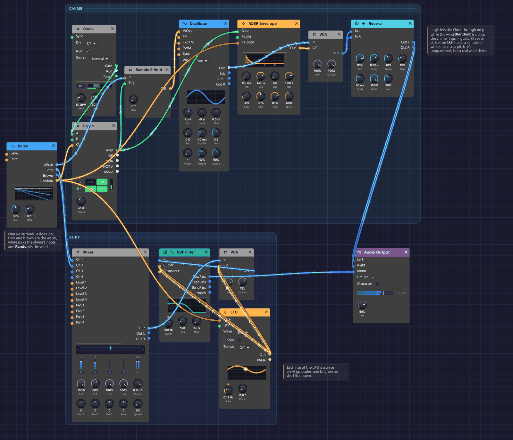

Shoreline
Surf rolls in and draws back, and a glass chime somewhere up the beach turns in the wind. Nothing here is a recording, and nothing repeats: a single Noise module makes the water, decides when each wave arrives, and picks every note the chime plays. It plays itself; press Play and let it run.
Load it: choose 📚 Examples → Shoreline in the toolbar and press ▶ Play. It needs no keyboard. The patch file is
patches/shoreline.json.

The chime runs along the top and the surf along the bottom. The Noise module on the left feeds both.What it teaches
- Noise as sound. Pink and brown noise through a moving lowpass filter make convincing surf.
- Noise as decision. White noise, sampled on a clock, chooses notes. Noise's smooth Random output decides how fast the waves come and how hard the chime is struck.
- One source, many voices. Every output of the Noise module is patched, and each does a different job. Because one random signal drives both the waves and the chime, the two move together: when the wind picks up, the waves come quicker and the chime rings louder.
Modules
| Module | Settings |
|---|---|
| Noise | Level 50%, Rate 0.07 Hz |
| Clock | BPM 80, Div 1/4, Gate 30% |
| Sample & Hold | Defaults (no slew) |
| Oscillator | Wave Sine, Oct +1 |
| ADSR Envelope | Atk 2 ms, Dec 1.2 s, Sus 0%, Rel 1.2 s, Vel 80% |
| VCA (chime) | Defaults |
| Reverb | Size 85%, Decay 6 s, Damp 40%, PreD 40 ms, Mix 45% |
| LFO | Rate 0.12 Hz, Wave Sine, Bipolar off |
| Mixer | Lv 1 100%, Lv 2 60% |
| VCA (surf) | Level 90%, CV Amt 75% |
| SVF Filter | Cutoff 500 Hz, Res 15% |
| Audio Output | Vol 80% |
How it's built
The surf
[Noise Pink] ──> [Mixer Ch 1]
[Noise Brown] ──> [Mixer Ch 2]
[Mixer Out] ──> [VCA (surf) In]
[VCA (surf) Out] ──> [SVF Filter In]
[SVF Filter LowPass] ──> [Audio Output Mono]
Pink noise has the even, rushing quality of water. Brown noise, mixed in a little lower, adds the deep rumble underneath. The lowpass filter at 500 Hz takes off the hiss and leaves something that sounds far away.
The waves
[LFO Out] ──> [VCA (surf) CV]
──> [SVF Filter Cutoff]
The LFO is a slow, unipolar sine, so it rises from 0 to 1 and falls back about every eight seconds. Each rise is a wave arriving. On the VCA, with CV Amt at 75%, it swells the surf by about 12 dB and never quite silences it. On the filter's Cutoff, which works in octaves, it opens the filter from 500 Hz to 1 kHz. A wave gets brighter as it gets louder, the way a breaker's hiss arrives with its roar.
No two waves alike
[Noise Random] ──> [LFO Rate]
On its own the LFO would be a metronome. Noise's Random output wanders smoothly between -1 and 1, choosing a new value about every fourteen seconds (Rate 0.07 Hz). Patched into the LFO's Rate, each +1 doubles the wave speed and each -1 halves it. Waves now arrive anywhere from every four seconds to every seventeen, in calm stretches and busy ones.
The chime
[Clock Gate] ──> [Sample & Hold Trig]
[Noise White] ──> [Sample & Hold In]
[Sample & Hold Out] ──> [Oscillator V/Oct]
[Clock Gate] ──> [ADSR Gate]
[Oscillator Out] ──> [VCA (chime) In]
[ADSR Out] ──> [VCA (chime) CV]
This is the classic random melody. On each clock pulse, every 0.75 seconds, the Sample & Hold catches the white noise and holds it as a pitch. With Noise Level at 50%, the pitches land anywhere within half an octave of C5. They're unquantized, falling between the keys of a piano, which suits a wind chime: real chimes are seldom tuned to a scale. The sine wave, a 2 ms strike and a 1.2-second ring make it sound like glass.
The wind
[Noise Random] ──> [ADSR Velocity]
The same Random that sets the wave speed also sets how hard each strike lands. With Vel at 80%, a strike while Random is high rings at full level. One while it's at or below zero rings at a fifth of that, a faint tick. So the chime comes and goes in gusts, and the gusts come with the faster waves.
Space
[VCA (chime) Out] ──> [Reverb In L]
──> [Reverb In R]
[Reverb Out L] ──> [Audio Output Left]
[Reverb Out R] ──> [Audio Output Right]
A large, six-second reverb spreads the chime across the stereo field and blurs each note into the next. The surf skips the reverb and goes straight to Mono. That keeps the water close and the chime farther off.
Variations
Stormier. Raise the LFO's Rate to 0.3 Hz and the filter's Res to 40%. Swap Ch 1 and Ch 2 levels on the Mixer for a heavier, browner sea.
A wider chime. Turn Noise Level up to 100% and the chime ranges a full octave either way. The surf gets louder too, so lower the surf VCA's Level to match.
Gentler wind. Lower the ADSR's Vel to 40% so calm and gusty strikes differ less.
Glide. Raise the Sample & Hold's Slew to 50 ms and the chime bends between notes, more like a singing bowl than a bell.
A tuned chime. Patch a Quantizer between the Sample & Hold and the Oscillator, set to Pentatonic Major. The chime now plays notes of a scale, like a set of tuned bells.
A shimmer. Set the Oscillator's Voices to 3 and Detune to 10%. Each strike now beats slowly against itself, like a long metal tube.
Related
- Noise – every output used here, explained
- Sample & Hold – turning noise into notes
- Generative Ambient – variety from cycles that don't line up, and chance kept in key
- Rhythmic Sequence – noise as a hi-hat